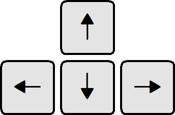
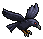
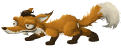
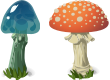

Collect hazelnuts and hide them in your house on a tree!

Use arrows to move around the forest.
Press and hold ctrl to catch a hazelnut and carry it.

Awoid these nasty crows. They can steal your nut!

Beware of a bloody fox...

Experiment with mushrooms and see what happens... :)
Game built on Phaser 2.2.2 library
Physics used: P2JS
Special effects:
- Jumping through the tree branches
- Following the player, if within a range
- Catching and stealing nuts using lock constraints
- Accelerating / switching off gravity after eating mushrooms
All these lovely assets used in this game come from the Glitch game and have been released to public domain by authors. Thanks!
Fractal sky by: Irina Pechkareva, public domain
Galaxy photo by: NASA, public domain
Help and support: Dariusz Luber/Coders Lab
Sources:
Phaser
http://www.html5gamedevs.com/
My gitHub
My linkedIn
email: marzena.badziak@gmail.com